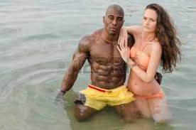
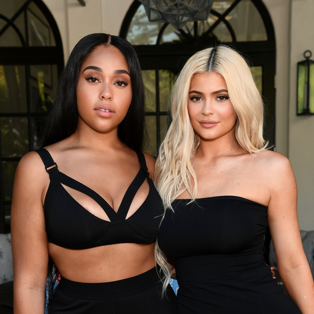
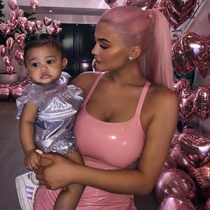
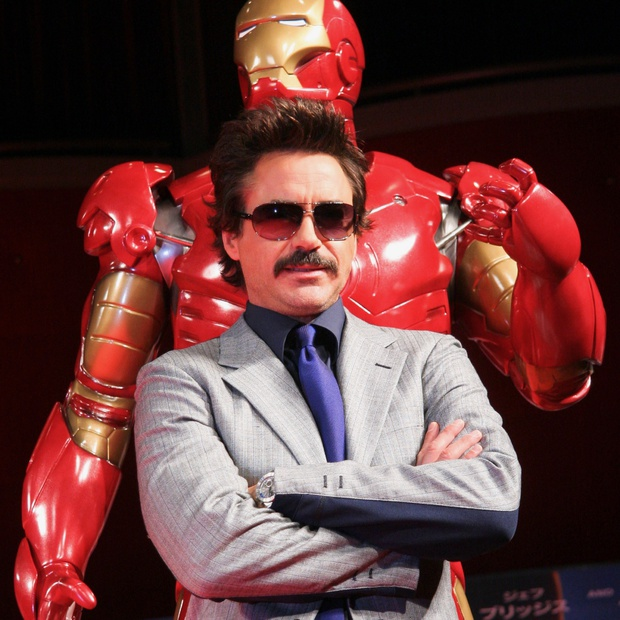

Se nos saltan las lágrimas viendo a Emilia Clarke así de emocionada tras haber hecho la confesión más dura de su vida
Digan lo que digan los mal pensados, la dura confesión que hizo ayer Emilia Clarke sobre los dos aneurismas que sufrió cuando empezó a rodar la serie ha servido para mucho más que para recordarnos que el próximo 15 de abril se estrenan los nuevos episodios de Juego de Tronos. Al menos eso es lo que se deduce del vídeo que la actriz acaba de publicar en su perfil oficial de Instagram, donde visiblemente emocionada da las gracias a todos los que le han mostrado su cariño después de leer la columna que escribió en The New Yorker narrando los difíciles años que pasó luchando contra unos problemas de salud que casi le cuestan la vida. “Hola a todos, quería daros los gracias a todos. La respuesta que ha tenido mi historia es sobrecogedora, y eso me ha conmovido profundamente”, asegura. “Pero ahora que la conocéis, quiero deciros que ha llegado el momento de que contéis vosotros la vuestra”, continúa. “Decidnos cómo os recuperasteis vosotros de este varapalo y, quién sabe, quizás gracias a esto podamos ayudar a superar esta experiencia a los que por desgracia sufran algo similar en el futuro”, afirma la actriz, que para reunir bajo un mismo lugar todas estas historias de superación ha creado la fundación SameYou, a cuya web invita visitar para lograr que se mejore el cuidado de las personas. “¿Quién no querría que esto sea una realidad?”, concluye, junto a una serie de hashtags en los que asegura que es maravilloso cómo el mundo de vez en cuando te demuestra el significado de la palabra bondad. ¿Veis como esto no va de promocionar Juego de Tronos? ¡Como si además hiciera falta!

confirmado que Kylie Jenner y Travis Scott siguen juntos
Aunque Kylie Jenner reconoce que se ha convertido en milmillonaria gracias, en parte, al uso que hace de sus redes sociales, lo cierto es que la pequeña de las KarJenner siempre ha sido muy hábil a la hora de separar su vida íntima y sus relaciones del alcance de los medios.
VER 10 FOTOS
Los 10 vestidos MÁS alucinantes de los Grammy 2019: muy elegantes y muy de diosas
Un buen ejemplo de ello es la capacidad que demostró cuando le ocultó a la prensa su embarazo durante nueve meses y su relación con Travis Scott siempre ha sido un misterio: no viven juntos y sus apariciones son escasas.
Aun así, hace unas semanas, se especuló con la posibilidad de que estuviesen pasando por una mala racha. Según esta fuente, la relación de Kylie con el rapero se encuentra en un momento delicado porque la celebridad habría encontrado “pruebas” de la infidelidad de su novio en su móvil.
Después de aquello, el representante del rapero se encargó de negarlo y el aludido decidió borrar su cuenta de Instagram. En cualquier caso, que el cantante llevase días después una sudadera con la foto de su novia al partido de los Rockets contra los Warriors en Houston se leyó como una manera de demostrarle a su novia que la quería. Pero también podría ser una forma de acallar los rumores.
Un informante le contó a la revista People que la distancia de la pareja, provocada por los intensos calendarios laborales, complica las cosas. “Pasan muy poco tiempo juntos. Cuando están juntos, las cosas van muy bien. Pero cuando él está de gira, a Kylie le cuesta fiarse de él”.
En cualquier caso, Travis ha hecho un descanso en medio de su gira, Astroworld, para pasar algo de tiempo con su familia.
Hoy, la publicación TMZ ha publicado un vídeo en el que Kylie y Travis salen del restaurante Sweet Chick, en West Hollywood, junto a su hija, Stormi Webster, y se meten en el SUV de la empresaria. Las caras no son de felicidad, precisamente, pero eso no tendría por qué significar absolutamente nada.
Sobre todo, cuando te abordan los paparazzi después de que lleves días escuchando rumores ciertos (o inventados) sobre tu vida privada.

Pues parece que Kylie Jenner ya sabe qué hará con Jordyn Woods
Pues parece que Kylie Jenner ya lo tiene decidido. La celebrity ya sabría qué será de su amistad con Jordyn Woods. Al menos, en el futuro más inmediato y cuando se cumple un mes del escándalo que la joven protagonizó junto a Tristan Thompson.
Por recapitular, Woods confirmó en una entrevista haberse besado con Thompson en una fiesta en Los Ángeles el pasado mes de febrero. Una vez un blog de cotilleos se hizo eco de lo sucedido, se destapó un escándalo al que le siguieron denuncias públicas y la ruptura entre Khloé Kardashian y Thompson. Ahora, la ruptura tiene que ver con la relación entre Jenner y Woods.
La noticia viene desde varios frentes diferentes. TMZ contó en la madrugada del jueves que una fuente cercana a Jenner aseguraba que la pequeña del klan habría pasado página en su amistad con Woods. Y es algo que confirma otra fuente desde E! News, el portal de noticias de la cadena E!, el mismo que retransmite el reality Keeping Up With the Kardashians. Esa conexión no certifica la información al 100 por 100, pero es cierto que son pocas las ocasiones en las que los palos de ciego de TMZ son confirmados tan pronto por E!
"Kylie ya ha pasado página de todo el drama con Jordyn. No la necesita tanto como pensaba", cuenta una fuente a E! News. "No sabe lo que pasará en el futuro, pero Kylie siente que ya ha dicho todo lo que tenía que decir [...] y ha empezado a pasar tiempo con otra gente".
Jenner estuvo hace poco cenando y tomando copas con varios amigos en el restaurante The Nice Guy, en Los Ángeles; y salió en uno de los vídeos del famoso youtuber David Dobrik con el que parece haber hecho buenas migas. Woods no fue parte de ninguna de esas citas.
"Al principio, cuando sucedió todo, Jenner sintió que iba a ser difícil seguir adelante sin Jordyn, pero se está acostumbrando a ello", añade la fuente de E! News. Es algo que va en línea con lo que dicen desde TMZ, donde otras fuentes señalan que fue la entrevista de Woods con Jada Pinkett Smith confirmando su beso con Thompson la que logró que Jenner supiera que había que cerrar etapa. Tocaba a fin el capítulo protagonizada por la que durante años fue su mejor amiga.

Hasta que ESTO pase, Kylie Jenner no dejará que Stormi Webster participe en 'Keeping Up With the Kardashians'
Hasta que Kylie dio a luz a su primera hija, solo sus familiares más cercanos conocían la realidad que estaba viviendo la celebridad.
Y ya que había conseguido esconderlo, la empresaria aprovechó para lanzar el bombazo, coincidiendo con la Super Bowl, con un vídeo de 20 minutos en el que por fin podíamos ver qué había pasado durante todos aquellos meses.
De pronto, Stormi se había convertido en el bebé del que todos estaban hablando. La primogénita de Kylie Jenner y Travis Scott venía al mundo con más fanfarria que los bebés de su hermana, Kim Kardashian.
Ahora, esa niña, a la que ya hemos visto en diferentes circunstancias -protagonizando selfies con Kylie, paseando en carritos para bebé de Fendi o celebrando su primer cumpleaños- ha vuelto a ser noticia después de que su madre haya concedido una entrevista a la edición alemana de la revista Interview.
Cuando le preguntaron por la presencia de la niña en el reality del que vive toda la familia, Keeping Up with the Kardashians, la empresaria fue muy clara: “Esperaré hasta que sea lo suficientemente mayor para decidir por ella misma”, aseguró.

Vengadores con bigote: Robert Downey Jr. quiere saber a quién le queda mejor
A pocas semanas de poner fin a una era con Vengadores: Endgame, Robert Downey Jr. quiere poner finiquito a otro debate sobre sus compañeros de franquicia: quién ha lucido mejor el bigote en el pasado. Sus fans no lo tienen NADA claro.
"Ok, esta vez va en serio", dijo el actor que interpreta a Iron Man en Twitter este miércoles. Downey Jr. le proponía a sus seguidores que decidieran quién había llevado mejor el bigote en el pasado, si Chris Evans (Capitán América), Mark Ruffalo (Hulk) o él mismo. Junto al tuit, Downey Jr. adjuntó una imagen en el que aparecen los tres actores luciendo bigotes que dejan claro que pudieron haber tomado mejores decisiones en el pasado.
Que Downey Jr. limitara a tres Vengadores el debate de bigotudos no pasó desapercibido entre los fans, que pronto llenaron las menciones del actor de otras posibles variantes. Por ahí andaban otros Vengadores como Tom Hiddleston (Loki) con bigote photoshopeado, Tom Holland (Spider-Man) en su papel para la película Ciudad perdida de Z, Sebastian Stan (Soldado de Invierno) en una escena de Yo, Tonya, Jeremy Renner (Ojo de Halcón) en Kill The Messenger, Benedict Cumberbatch (Doctor Extraño) en una alfombra roja, e incluso Gwyneth Paltrow (Pepper Potts) vestida de hombre en Shakespeare Enamorado.
"¿Cuenta la cantidad? ¿O los diferentes tipos de bigote? He visto muchos estilos únicos a lo largo de los años", escribió Ruffalo a Downey Jr. junto a un hilarante montaje de fotografías de Ruffalo luciendo bigotes de lo más variopintos. Un usuario habló por todos cuando le dijo a Ruffalo: "Por favor, dime que esto lo has hecho tú mismo".
Es difícil cuantificar qué Vengador recibió más votos de entre los candidatos propuestos por Downey Jr., pero Ruffalo sin duda fue uno de los más aplaudidos gracias a su fotomontaje. Por otro lado, es probable que Evans no quisiera ni participar después de estar a punto de declararle la guerra a Canadá hace unas semanas por publicar una foto suya con bigote. Pero es sin embargo una imagen de Evans desternillado en distintas entrevistas (y que lleva meses convertida en meme) la que mejor resume todo el debate. A la pregunta propuesta de Downey Jr. sobre a quién le quedaba mejor el bigote, las carcajadas de Evans iban acompañadas de un simple: "A ninguno".